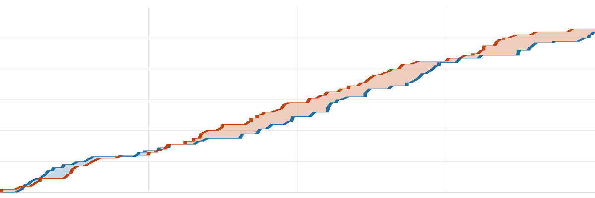

球不落·NBA 每日战报
2026-11-13美国时间
共 9 场 ｜ 每行格式：客队 比分 : 比分 主队
今天 9 场，最值得看的是老鹰 117-125 公牛：交替领先 5 次，打平 8 次，打到加时才分出胜负。
焦点球星4 人
杜兰特22分3板 6助·火箭 胜 爵士
文班亚马12分12板 6助·马刺 胜 勇士
库里（未出场）勇士 负 马刺
杨瀚森（未出场）开拓者 胜 国王
今日炸裂表现上榜4 人
三双 27分 11板 10助杰伦·约翰逊27分11板 10助· 老鹰 负 公牛
三双 15分 10板 14助吉迪15分10板 14助· 公牛 胜 老鹰
轰下 43 分申京43分12板 5助· 火箭 胜 爵士
轰下 40 分亚历山大40分4板 5助· 雷霆 负 快船
今日破纪录1 条
球星1 条
瓦格纳 · 生涯首个三双· 雄鹿 99-107 魔术
推荐比赛5 场
夯值得看 · 加时才分出胜负
| 1 | 2 | 3 | 4 | OT |
| 分节 | 24-33 | 29-27 | 30-24 | 27-26 | 7-15 |
加时赛
全场交替领先 5 次、打平 8 次，公牛最后阶段才拉开 8 分。
| 老鹰 | 杰伦·约翰逊27分11板10助·麦科勒姆20分5板5助·奥孔古17分6板1助 |
| 公牛 | 诺曼·鲍威尔33分5板2助·杰伦·史密斯15分12板3助·奥科罗15分3板2助 |
|
命中率 |
三分 |
篮板 |
助攻 |
失误 |
| 老鹰 |
44 | 20 | 48 | 29 | 17 |
| 公牛 |
49 | 40 | 51 | 34 | 25 |
北京 09:00 开球 ｜ 老鹰 7-6 ｜ 公牛 2-9
夯今日最胶着
| 1 | 2 | 3 | 4 |
| 分节 | 27-33 | 17-24 | 40-25 | 28-31 |
快船只赢 1 分，最后时刻才定胜负。
| 雷霆 | 亚历山大40分4板5助·麦凯恩23分4板2助·哈滕施泰因21分16板6助 |
| 快船 | 布鲁克·洛佩兹26分7板4助·加兰24分4板7助·小德里克·琼斯14分5板 |
|
命中率 |
三分 |
篮板 |
助攻 |
失误 |
| 雷霆 |
47 | 31 | 45 | 27 | 13 |
| 快船 |
45 | 39 | 40 | 28 | 11 |
北京 11:30 开球 ｜ 雷霆 8-5 ｜ 快船 3-8
人上人今日最大逆转
| 1 | 2 | 3 | 4 |
| 分节 | 27-27 | 26-36 | 36-29 | 29-33 |
全场交替领先 11 次、打平 7 次，火箭最后阶段才拉开 7 分。
| 爵士 | 彼得森28分7板2助·基昂特·乔治27分4板7助·艾斯·贝利21分3板1助 |
| 火箭 | 申京43分12板5助·杜兰特22分3板6助·范弗利特17分2板3助 |
|
命中率 |
三分 |
篮板 |
助攻 |
失误 |
| 爵士 |
46 | 37 | 41 | 20 | 13 |
| 火箭 |
47 | 35 | 47 | 25 | 8 |
北京 09:30 开球 ｜ 爵士 1-12 ｜ 火箭 10-3
顶级值得看 · 只差 2 分
| 1 | 2 | 3 | 4 |
| 分节 | 27-26 | 22-32 | 35-27 | 20-21 |

尼克斯步行者横轴为比赛进程
全场交替领先 4 次、打平 6 次，步行者最后阶段才拉开 2 分。
| 尼克斯 | 布伦森33分1板11助·唐斯23分15板5助·布里奇斯18分3板3助 |
| 步行者 | 西亚卡姆19分3板2助·尼斯米斯18分7板1助·乌布雷16分5板 |
|
命中率 |
三分 |
篮板 |
助攻 |
失误 |
| 尼克斯 |
43 | 35 | 43 | 28 | 17 |
| 步行者 |
43 | 34 | 50 | 23 | 17 |
北京 08:00 开球 ｜ 尼克斯 6-6 ｜ 步行者 5-8
人上人值得看 · 交替领先 12 次
| 1 | 2 | 3 | 4 |
| 分节 | 27-29 | 30-25 | 34-38 | 30-41 |
全场交替领先 12 次、打平 7 次，热火最后阶段才拉开 12 分。
| 骑士 | 米切尔25分4板7助·普罗克特22分4板3助·哈登20分6板8助 |
| 热火 | 字母哥37分9板2助·阿德巴约37分14板3助·戴维恩·米切尔22分5板17助 |
|
命中率 |
三分 |
篮板 |
助攻 |
失误 |
| 骑士 |
49 | 38 | 36 | 28 | 10 |
| 热火 |
52 | 35 | 46 | 37 | 9 |
北京 09:00 开球 ｜ 骑士 6-7 ｜ 热火 6-6
其余 4 场按开球时间
NPC只差 8 分，但全程没缠斗
| 1 | 2 | 3 | 4 |
| 分节 | 15-23 | 22-29 | 35-32 | 27-23 |
魔术最多领先 20 分，末段被追到 8 分。
| 雄鹿 | 哈克斯22分6板4助·希罗18分1板2助·库兹马14分4板2助 |
| 魔术 | 瓦格纳35分9板12助·贝恩21分5板3助·达席尔瓦12分6板2助 |
|
命中率 |
三分 |
篮板 |
助攻 |
失误 |
| 雄鹿 |
39 | 39 | 45 | 20 | 16 |
| 魔术 |
45 | 30 | 45 | 29 | 14 |
北京 08:00 开球 ｜ 雄鹿 1-12 ｜ 魔术 5-7
今日最佳一球
小温德尔·卡特 空中接力扣篮
雄鹿 99-107 魔术 · 第 4 节 剩 1:36
拉完了赢 31 分，全程没缠斗
| 1 | 2 | 3 | 4 |
| 分节 | 35-28 | 35-30 | 35-28 | 37-25 |
灰熊最多领先 31 分，最终赢 31 分。
| 灰熊 | 格兰特22分1板1助·泰·杰罗姆17分2板9助·考沃德14分7板6助 |
| 鹈鹕 | 贝伊30分10板·锡安22分5板4助·费尔斯18分5板7助 |
|
命中率 |
三分 |
篮板 |
助攻 |
失误 |
| 灰熊 |
48 | 40 | 51 | 36 | 12 |
| 鹈鹕 |
42 | 23 | 43 | 23 | 16 |
北京 09:00 开球 ｜ 灰熊 8-4 ｜ 鹈鹕 4-9
拉完了今日最平淡
| 1 | 2 | 3 | 4 |
| 分节 | 14-38 | 19-25 | 27-34 | 25-26 |
马刺最多领先 43 分，最终赢 38 分。
| 勇士 | 克莱尔20分2板6助·巴西11分5板2助·梅尔顿8分4板3助 |
| 马刺 | 卡斯尔32分5板6助·凯尔登·约翰逊18分4板4助·文班亚马12分12板6助 |
|
命中率 |
三分 |
篮板 |
助攻 |
失误 |
| 勇士 |
33 | 37 | 43 | 23 | 14 |
| 马刺 |
48 | 33 | 60 | 34 | 11 |
北京 10:30 开球 ｜ 勇士 8-5 ｜ 马刺 11-2
拉赢 13 分，末节没缠斗
| 1 | 2 | 3 | 4 |
| 分节 | 34-25 | 30-28 | 29-25 | 27-29 |
开拓者最多领先 20 分，最终赢 13 分。
| 开拓者 | 阿夫迪亚34分6板4助·利拉德29分2板6助·卡马拉14分2板1助 |
| 国王 | 亨特24分5板2助·萨博尼斯21分12板5助·小达里厄斯·阿卡夫17分4板6助 |
|
命中率 |
三分 |
篮板 |
助攻 |
失误 |
| 开拓者 |
48 | 40 | 41 | 21 | 17 |
| 国王 |
45 | 32 | 38 | 29 | 13 |
北京 11:00 开球 ｜ 开拓者 9-3 ｜ 国王 1-11
明日焦点
活塞@热火
北京时间 11月15日 09:00 ｜ 热火主场
NBA TV 全美直播
战绩 8胜3负 / 6胜6负
明天全联盟 5 场，上述是值得关注场次
球不落 ｜ 每天一份 NBA 战报，只写场上发生的事
本文基于公开赛事数据独立撰写，与 NBA 及任何转播平台无关联。
比赛日 2026-11-13（美国时间）｜ 数据来源：ESPN